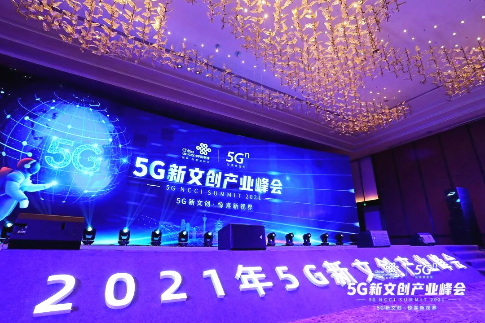
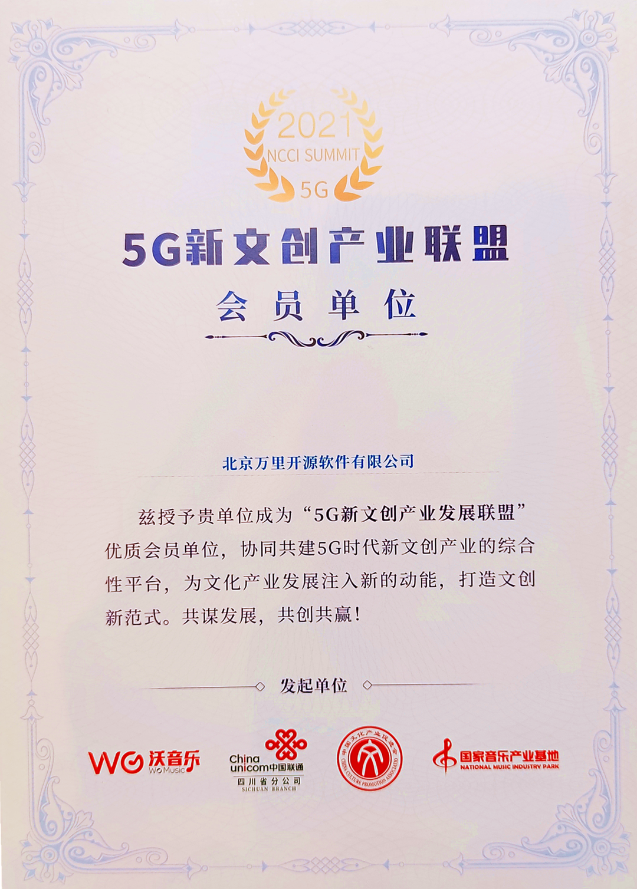

同心共荣 智创未来——万里数据库亮相2021年5G新文创产业峰会
盛夏五月，相聚蓉城。5月20日，以“5G新文创•惊喜新视界”为主题的2021年5G新文创产业峰会在成都协信中心希尔顿酒店盛大举行。此次峰会由四川联通、联通在线以及中国联通MEC运营中心联合主办，联通沃音乐协办。四川省文旅厅及众多企业代表、业内专家领袖出席会议，集结产业链各方力量，融合云、网、边、端、业五大优势全面打造5G超高清、5G•AI影像、5G融媒体等能力应用，将科技创新融入人文领域，一站式赋能，助推产业加速发展，打造文创新范式。

作为联通沃音乐战略合作伙伴及分布式数据库知名企业，万里数据库受邀出席峰会，三箭齐发，亮点不断。不仅在会上正式发布与联通沃音乐联合研发的海纳数据智能平台uniBase，还加入中国联通5G新文创产业联盟成为首批成员单位，并设立展位就海纳数据智能平台技术成果与参会嘉宾展开分享交流。
联合成立星空实验室 海纳数据智能平台正式发布
本次峰会发布了集合“云大物智安视信”七大板块的星空实验室，汇聚众多行业领军企业，为文创产业发展注智。其中，由万里数据库与联通沃音乐联合研发的技术成果——uniBase海纳数据智能平台也正式对外发布。
图
万里数据库代表（右一）上台参与发布仪式
该平台面向新文创领域打造全流程场景一站式的数据技术服务与大数据解决方案——uniBase海纳数据智能平台，提供从数据库、数据治理、数据应用到运维的全流程一体化应用系统，为运营商、新文创、政企、金融等行业提供定制化数据智能解决方案，轻松帮助企事业单位实现数字化、国产化转型，释放数据价值，更好提升业务发展水平。
图
uniBase海纳数据智能平台技术架构图
同心共荣 助力新生态
万里成为中国联通5G新文创产业联盟首批成员单位
由四川联通、联通在线、国家音乐产业基地、中国文化产业促进会四家行业重量级单位联合发起的“5G新文创产业联盟”在峰会期间正式成立，现已集结产业链近百家会员单位。其中，万里数据库凭借业内影响力与优秀的产品技术实力，成为中国联通5G新文创产业联盟的首批成员单位，后期希望借自身专业的数据库产品技术实力，联合产业上下游多方力量，助力中国联通打造5G文创领域新生态。

图
5G新文创产业联盟会员单位证书

技术共享 展位交流
uniBase为新文创领域插上数据智能的翅膀
峰会上，主办方专门设立了5G云网解决方案、5G AI未来影像等在内的5G新文创科技应用展区。万里数据库联合打造的海纳数据智能平台亦占一席，与参会嘉宾就最新技术成果展开交流、合作共享，以期为新文创领域插上数据智能的翅膀，助力新文创领域做大做强。展位现场，不少与会者纷纷驻足观看、咨询探讨，对平台的技术成果给予了充分肯定与高度评价。
展位交流
communication
2021年，5G、AI、大数据、云计算等技术逐渐成熟，为文化产业带来了大量的创新应用，5G新文创产业进入全新发展阶段。本次2021年5G新文创产业峰会的成功召开，是打造文创新范式、助推产业创新发展的重要举措。
未来，万里数据库将借助“5G新文创产业联盟与海纳数据智能联合创新实验室等多个平台，与联通沃音乐展开技术、项目、人才、渠道等多方面的深度交流与合作，助力联通沃音乐持续深耕文创领域，构建产业新生态，打造更多创新应用，开启5G时代文创产业发展新篇章。
推荐阅读1.喜讯 | 万里数据库成功入选联通沃音乐解决方案合作方
2. 万里数据库与联通在线沃音乐携手 共建海纳数据智能联合研发实验室
3. 万里开源与联通沃音乐完成“云签约”，共建5G数据智能技术服务平台


扫码二维码
关注公众号